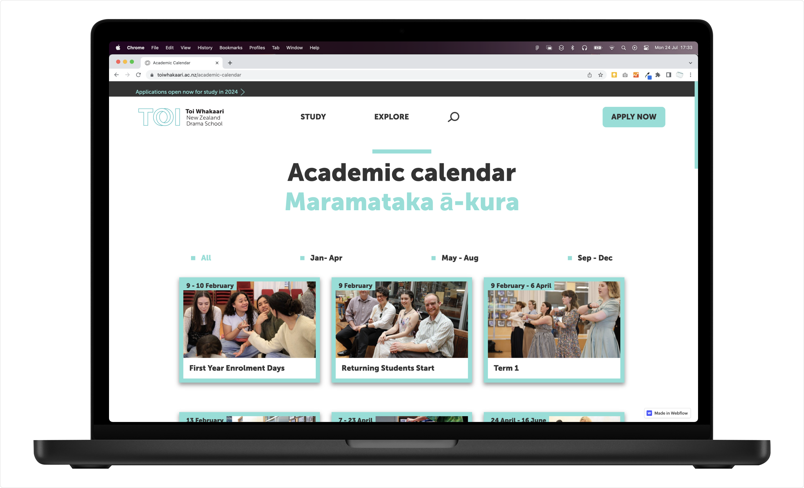
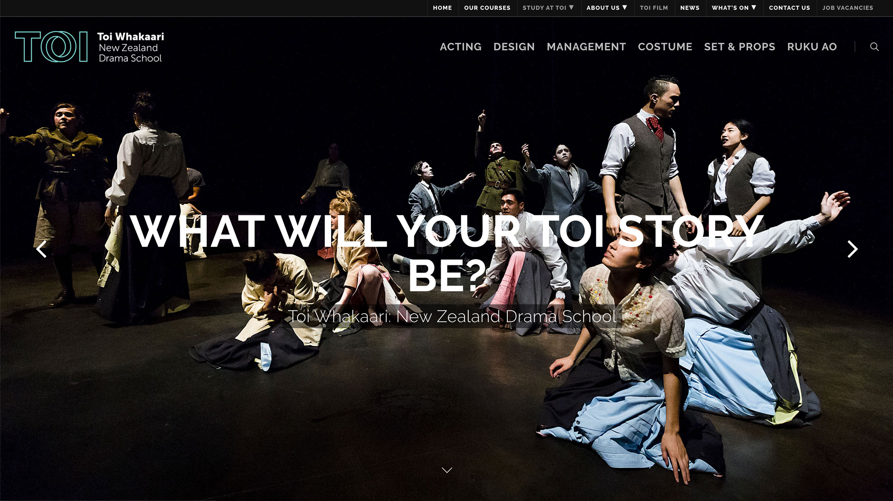
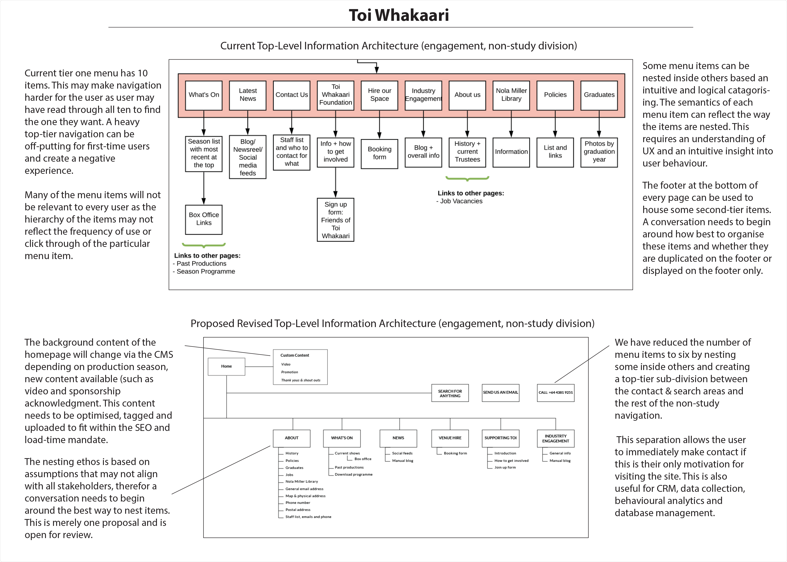
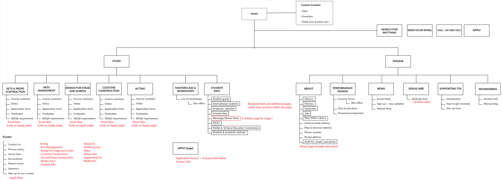
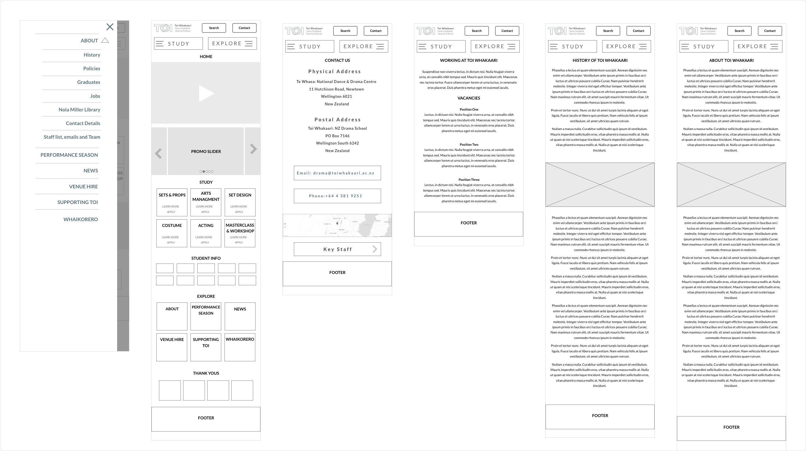
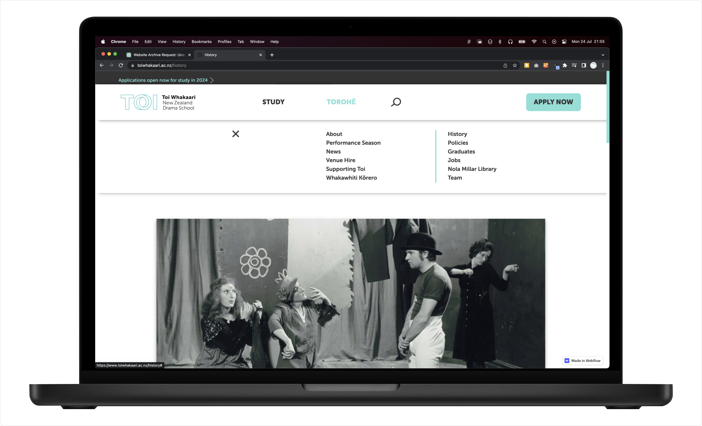
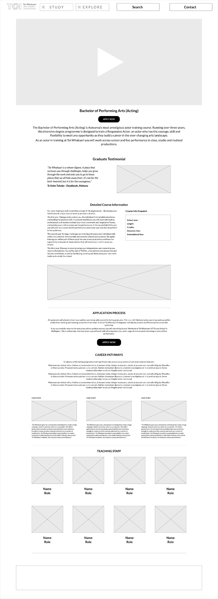
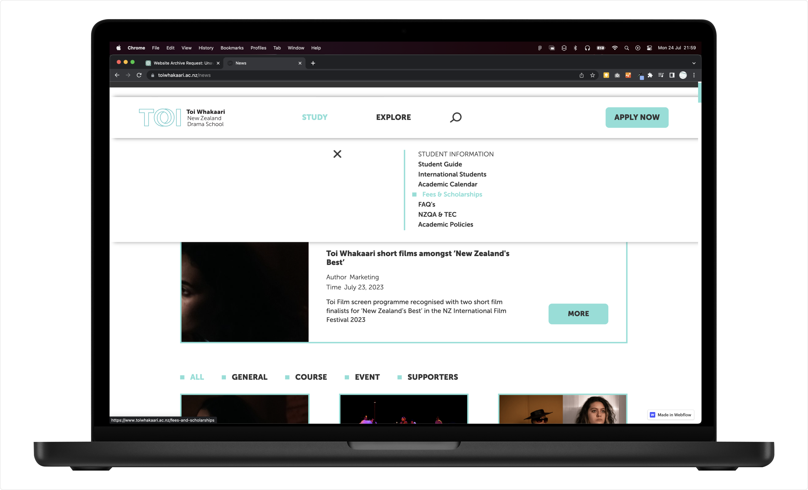

www.toiwhakaari.ac.nz
Redesigned website exhibiting cleaner, more accessible design

Former homepage

Output from stakeholder discovery sessions

Proposed top-level IA

Mobile wireframes

New enhanced navigation

Desktop homepage wireframe

Sticky navigation bar to enhance user journey
